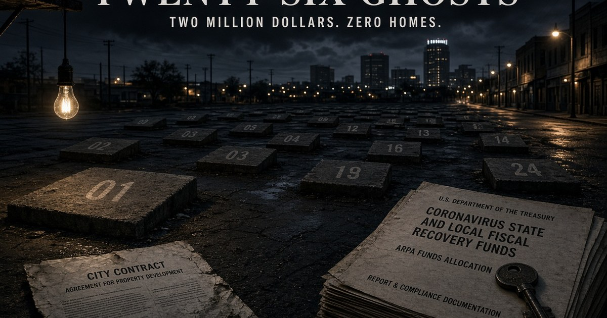
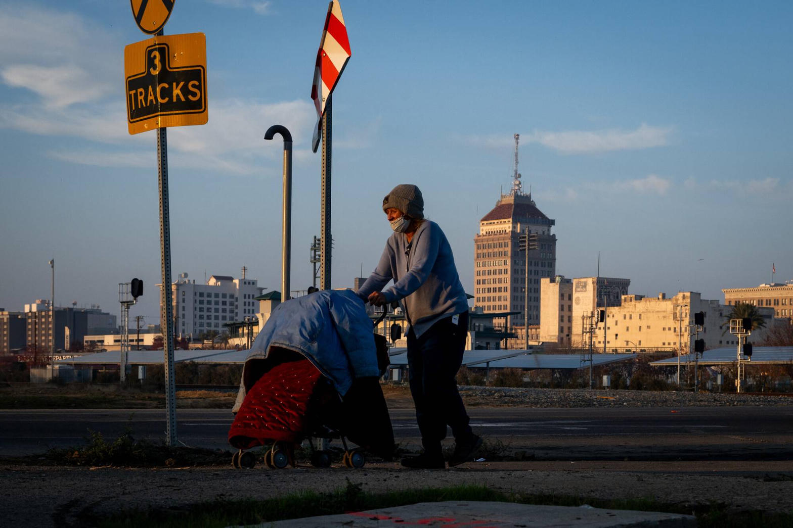
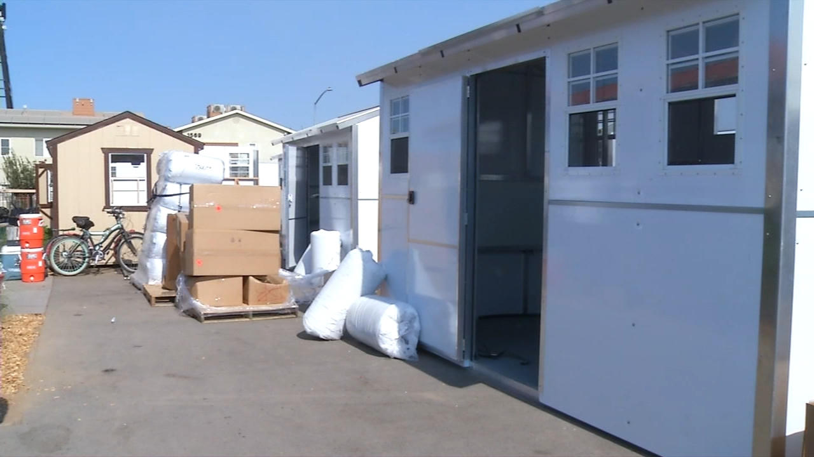
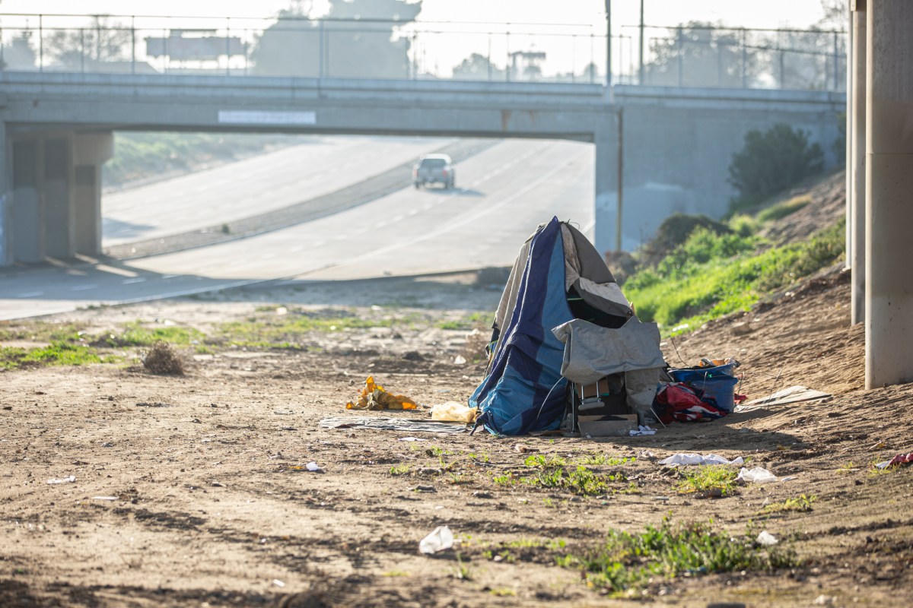

Promised
26 homes
Factory-built units, 288 square feet each, sold as non-traditional permanent supportive housing.
High Tower District Story
Two million dollars left City Hall for homes that never arrived. The people on the sidewalk were told they were experiencing homelessness. What they were also experiencing was a public contract that produced lawsuits instead of keys.
Published September 2, 2026 · Tower District, Fresno
Promised
26 homes
Factory-built units, 288 square feet each, sold as non-traditional permanent supportive housing.
Public money
~$2 million
About $965,000 in federal ARPA dollars and $1 million from the state Encampment Resolution Funding grant.
Delivered
0 units
Poverello paid a $964,482 deposit. The city later voted 6-0 to sue. The sidewalk did not get a house.

City Hall likes a soft noun. People experiencing homelessness. Unhoused neighbors. Neighbors in transition. The phrase does work. It turns a condition into an identity and it turns a policy failure into weather.
A person sleeping on a downtown curb is not a weather event. Some are sick. Some are using. Some were priced out. Some were released from jail with a bus pass and no plan. Some refuse every bed that comes with a rule. All of that can be true at once. None of it is an excuse for a government that pays itself six figures to move money through a nonprofit and then discover, three years later, that the houses were never built.
The better sentence is shorter. People are on the street because housing, enforcement, treatment, and contract control all failed in the same city at the same time. The label hides the last item. That is why the label is useful.

In 2023 the City of Fresno contracted with Poverello House to put about two dozen tiny homes on the ground. The city’s own later recovery report named the number: 26 prefabricated units, owned and operated by Poverello, one or two people each. Performance measures listed 26 affordable units. Outcome lines said pending completion.
Poverello signed with PreFab Innovations Inc. and founder David George Clevenger Jr. Total contract about $1.96 million. Deposit paid: $964,482. Promised window: 210 working days. Delivered: nothing stored, nothing completed, nothing returned, according to the lawsuit Poverello filed in Fresno County Superior Court on August 18, 2026.
On August 14, 2026, the Fresno City Council voted in closed session, 6-0, to start litigation against Poverello House. Councilmember Mike Karbassi was absent. City Attorney Andrew Janz told Fresnoland the city wants nearly two million dollars back. Poverello’s CEO, Zachary Darrah, said the nonprofit had offered to return the $1 million in state funds and was working with the FBI on the ARPA slice that went to the contractor. Janz said a partial write-off was unacceptable, especially with the FBI and the Attorney General in the picture.
California Attorney General Rob Bonta’s office had already moved in February 2026 to strip Clevenger of a contractor license. PreFab was evicted from a warehouse at 1801 Santa Clara Avenue, a Fresno Rescue Mission property. Rescue Mission CEO Matt Dildine later called the stall a ruse for more time.
Read that chain without romance. City money. Nonprofit pass-through. Contractor. Zero keys. Lawsuits in both directions. The official report still talking like construction was waiting on a site.

District 3 did not invent the street. Miguel Arias did spend years as the district’s loudest translator of it. He sold motel conversions on Parkway Drive. He claimed the district had taken thousands of people off the street for the rest of the city. He fought some Homekey deals by citing neighbors left out of the conversation. He helped pass and then live with a camping ordinance that even friendly coverage later called weak on results. He is now termed out of the council in January 2027 and is running for Fresno Unified Trustee Area 1 on November 3, 2026.
The Poverello vote was a council vote, not a one-man wire. The mayor’s administration writes the staff reports. Planning holds the recovery plan that still listed 26 units as a key performance indicator after the units had already failed to appear. The city attorney is now the collector. Poverello accepted public money and picked the contractor. Clevenger, on the nonprofit’s complaint, took a deposit and produced no homes.
That is the honest map. It is also not a pardon. Arias is the District 3 officer the public pays to notice when a housing promise in his city becomes a ghost. Council base pay is $111,320 a year after the 2022 raise, per The Fresno Bee’s May 2026 compensation report. The job is not a volunteer sermon. The job is to stop money from leaving without a unit behind it.
If the public is angry, aim it at the function, not the adjective. The function is oversight. The adjective is compassion. Oversight is what failed. Compassion is what got printed on the press release.
Steel man first. Arias can say District 3 absorbed a load no other district wanted. Motel Drive conversions did produce real beds. Homekey and HOMEKEY+ money did buy buildings. County behavioral health is not a city department. State housing costs and court limits on encampment clearance are not invented. A contractor under Attorney General and FBI scrutiny can defraud a nonprofit that thought it was buying houses. A councilmember who later votes to sue is not the same as a councilmember who pocketed the deposit.
Keep that. Then look at what the steel man does not cover.
It does not cover three years of pending completion language while the units stayed at zero. It does not cover a city recovery plan that still treated 26 homes as a performance measure after the factory had already failed. It does not cover the habit of converting every visible failure into a speech about dignity. It does not cover the fact that the people sleeping outside cannot cash a lawsuit.
The better charge is not that Miguel Arias personally stole two million dollars. No public record in this file says that. The better charge is public-service failure. Money moved. Units did not. The district’s senior interpreter kept talking as if the pipeline was the product.
Can ICE pull Arias out of the chair next week and bar him from ever running again? No. Not on the public record. Not as a policy tool.
Arias has said he was born in Mexico and that his family later became citizens under the Reagan amnesty. A naturalized citizen is a citizen. ICE does not vacate a city office because a councilmember uses sanctuary language or fights a federal operation on the dais. Immigration agents enforce immigration law. They do not run the Fresno City Clerk.
The Fresno Charter says when a seat goes empty: death, resignation, recall, felony or a conviction tied to official duty, loss of residency, failure to qualify, or absence from the state or from meetings for more than sixty consecutive days without leave. Council then either appoints, in a narrow window, or the voters get a special election. That is the legal machine. ICE is not listed.
The hypothetical still has a narrow edge, and it should be stated without theater. If an officeholder were not a citizen and were lawfully detained as removable, the absence rules could create a vacancy the same way a long hospital stay could. That is a status fact plus a charter clock. It is not a political wish. There is no public filing in this story that puts Arias in that category. Treating ICE as a shortcut around an election is a way to avoid the work the charter actually names.
Preventing someone from running again is also not an ICE product. Ballot eligibility is state and city law. Recall is a voter product. A school-board race is a voter product. Denaturalization, when it happens at all, is a court product that requires proof of fraud in the citizenship file. None of that is a phone call from a field office to punish a speech.
If the goal is removal from the next job, the calendar is already printed. He is not running for District 3 again. He is running for Fresno Unified Trustee Area 1 on November 3, 2026. That is the live accountability door. A fantasy ICE extraction is a way to miss it.

Ask for the ledger, not a vibe. When did the $964,482 leave the city or the grantee account? Who signed the site-control papers? When did Planning first know PreFab had no units to store? Why did a 2025 recovery report still list 26 units as the measure after the factory had already gone quiet? Will recovered ARPA dollars have to return to Washington because the clock ran out?
Those questions belong to the whole dais and to the city attorney and to Poverello’s board. They also belong to the man who made District 3 the city’s housing sermon for seven years. Pay at this level is not a courtesy. It is a performance contract. Twenty-six ghosts is the performance.
The street does not care who won the language fight. A person under a tarp is not experiencing a noun. He is sleeping outside after a government that talks about homes spent public money on a file that produced two lawsuits and zero doors.
Direct the anger at the contract, the oversight, and the officer who told the district the pipeline was working. Leave the ICE novel on the table. Use the November ballot that is already in print.